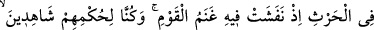
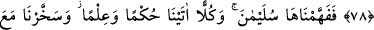
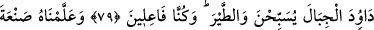
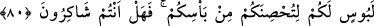
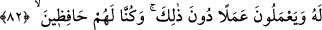

ARTIK
ŞÜKREDECEK MİSİNİZ?
76. Daha önce Nuh da duâ etmiş, biz onun duâsını kabul etmiştik. Böylece
kendisini ve (îman eden) yakınlarını büyük sıkıntıdan kurtarmıştık.
77. Onu, âyetlerimizi inkâr eden kavimden koruduk. Gerçekten onlar, fena bir
kavim idi; bu yüzden topunu birden (suya) gömdük.
78. Dâvud ve Süleyman’ı da (an). Bir zaman, bir ekin konusunda hüküm
veriyorlardı: bir gurup insanın koyun sürüsü, geceleyin başıboş bir vaziyette bu
ekinin içine dağılıp ziyan vermişti. Biz onların hükmünü görüp bilmekte idik.
79. Böylece bunu (bu fetvayı) Süleyman’a biz anlatmıştık. Biz, onların her birine
hüküm (hükümdarlık, peygamberlik) ve ilim verdik. Dâvud’a dağları ve kuşları
boyun eğdirdik. Onunla beraber tesbih ediyorlardı. (Bunları) biz yapmaktayız.
80. Ona, savaşın sıkıntılarından sizi koruması için zırh yapmayı öğrettik. Artık
şükredecek misiniz?
81. Süleyman’ın emrine de kasırga (gibi esen) rüzgârı verdik; onun emriyle
içinde bereketler yarattığımız yere doğru eserdi. Biz her şeyi biliriz.
82. Şeytanlar arasından da, onun için dalgıçlık eden (ve inciler çıkaran) ve bundan
başka işler görenler vardı. Biz onları gözetim altında tutuyorduk.